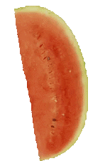
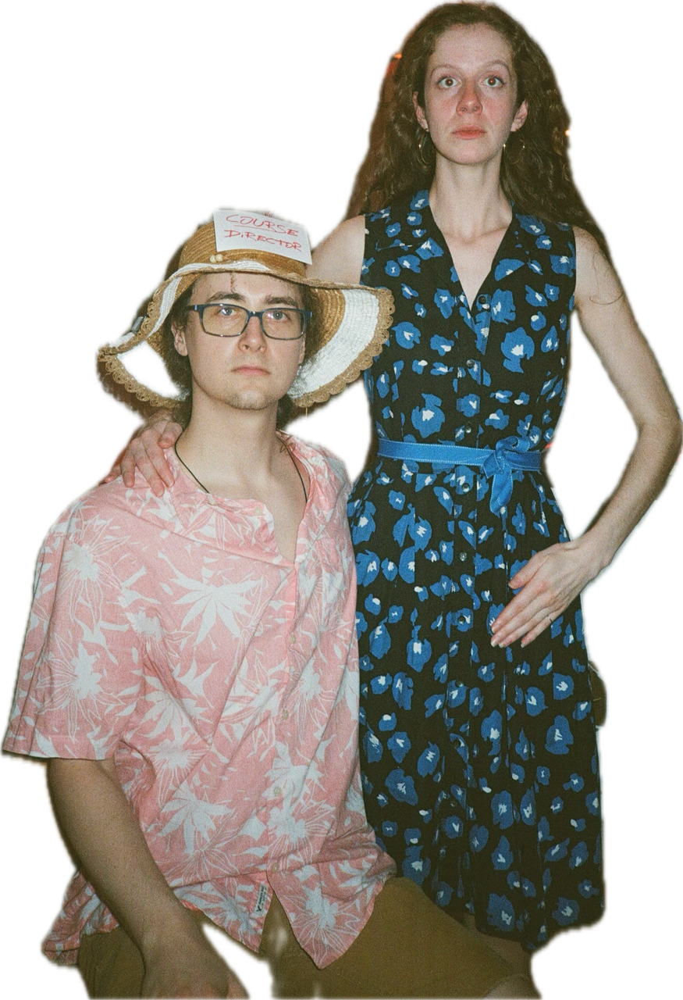
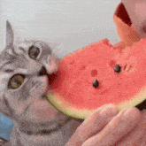
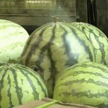

watermelons



why?
watermelons are 5 dollars in the grocery store in the building
and in our hearts that means it's time to celebrate
and also how dare u

what're we gonna do
we're gonna eat watermelon while dressed up as watermelons, obviously
(dress in PINK and GREEN and BLACK to show your love)
for the true aficionados, there may even be a watermelon themed beverage or two

faq
watermelons?
watermelons.
is it byow?
watermelon will be supplied. maybe a watermelon-themed beverage. if u want a beverage that's not watermelon u r in charge of that.
what if i have other plans?
what do you mean? of course you don't.
can i bring a plus one?
only if they like watermelon. or dress like a watermelon.
what do i wear?
PINK and GREEN and BLACK. in worship of the greatest fruit to grace our earth
what if i don't like watermelons?
you can still come, but you may be shunned.
will there be foods other than watermelons?
if u put other food in an empty watermelon, you could try to fool me, maybe.
seeds or no seeds?
i don't even understand the question.
is this an ART ATTACK?
no.
why not?
watermelons deserve their own events.
ok why not though?
ok ok fine, i'm tired and i didn't wanna move my furniture around yet, ok?
did you seriously buy a domain just for a watermelon party?
sure did. bought it for 10 years too. so sue me. (pls don't tho)